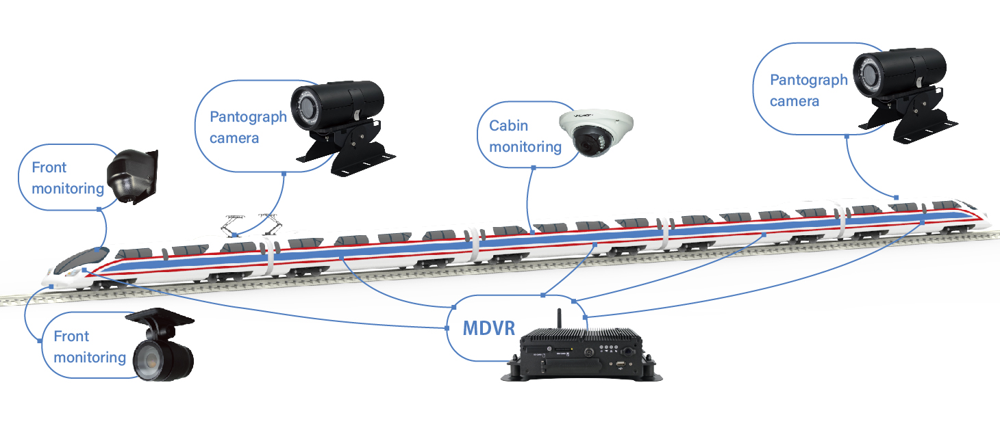
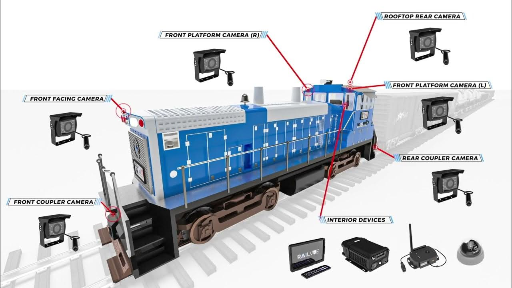

Our team of independent scientists and researchers uncovered this alarming reality through months of field investigations, data analysis, and forensic examinations of decommissioned train cars. Hidden cameras, laser-based tracking systems, and covert audio recorders were discovered embedded in various components of the rail infrastructure — devices often disguised or encrypted to avoid detection. This research exposes how trains have been weaponized against the public under the guise of safety and efficiency, and raises urgent questions about civil liberties, data privacy, and the growing reach of government surveillance.

Locomotive Image and Audio Recording Devices (Transportation.gov)
"Federal mandates require that all passenger trains be equipped with audio and visual recording devices, raising concerns about potential overreach."

Are Chinese Metro Cars Spying on Americans? (Washington Post)
"Concerns have been raised that foreign-manufactured train cars might be embedded with surveillance technology, transmitting data back to government agencies.
They are listening and recording us….the government even proves it online."

Mass Transit as a Surveillance Tool (CNET)
"Public transit systems are now being equipped with biometric surveillance and AI-driven monitoring, further eroding privacy in everyday travel."